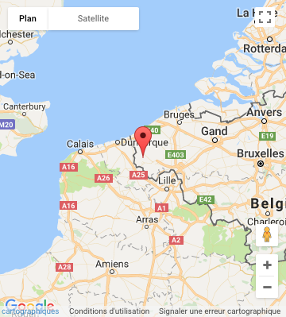

Historique
L'Abbaye de Saint-Sixte n'est pas une construction imposante. Les visiteurs et les promeneurs seront plutôt frappés par la simplicité et le calme qu'exhalent les bâtiments sobres. Ici, rien de clinquant ou de touristique... seulement un sentiment d'harmonie intemporelle régnant entre l'abbaye et le paysage magnifique du Westhoek. L'histoire de l'abbaye commence avec Jean Baptiste Victoor, qui vivait en ermite à cet endroit. En 1831, il accueillit trois moines du Mont des Cats, une fondation de Notre-Dame du Gard. L'un d'entre eux, Dom François-Marie, fonda le monastère en 1831.
Quarante années plus tard exactement, Saint-Sixte reçut le titre d'abbaye. C'est ainsi que débuta son histoire, dans cette région isolée et abandonnée, où le silence était le seul témoin d'une vie de prière et de travail. Les bâtiments, bâtis au cours des années, traduisent l'essor de l'abbaye. Un nouveau cloître, une petite église, une porte permettant une meilleure isolation, mais aussi une ferme, une brasserie, une forge, un moulin et un magasin de menuiserie apparaissent dans les annales. " Ora et Labora " : les murs racontent l'histoire de la vie des trappistes.
Types de bières et leurs caractéristiques
La bière de Westvleteren se décline en trois types :
- la Trappist Westvleteren blond (capsule verte), une blonde titrant 5,8 % d'alcool
- la Trappist Westvleteren 8 (capsule bleue), une brune acajou appelée extra titrant 8 %,
- la Trappist Westvleteren XII (capsule jaune), une brune titrant 10,2 % d'alcool appelée abt (quadruple) refermentée sur un lit de levure qu'il convient d'éviter de verser.
À noter que les deux brunes développent des aromatiques complexes avec la maturation en bouteille. Dans de bonnes conditions, la 8 et la XII peuvent ainsi vieillir des années. Il convient de les laisser mûrir en conservant les bouteilles à la verticale et à l’abri de la lumière à une température comprise entre 12 et 16°C. Elles se dégustent à cette même température. La Trappiste Blonde par contre se conserve moins longtemps et peut aussi être servie bien fraîche.
Fabrication
On trouve très peu d'information par rapport à la fabrication de cette mythique bière.
La Westvleteren est une bière difficile à se procurer car les moines de l'abbaye limitent volontairement la production à quelque 4800 hectolitres par an2. La demande s'est encore accrue depuis le 15 juin 2005, date à laquelle la Westvleteren XII a été élue meilleure bière du monde par un site américain parmi 30 001 autres bières issues du monde entier. Ce fait attira l'attention des médias, particulièrement britanniques, et provoqua une forte demande du public2.
La westvleteren est brassée avec la « Levure Trappiste Westvleteren».
Localisation
|  |
|